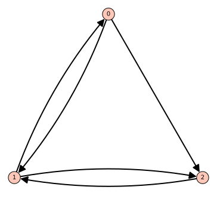
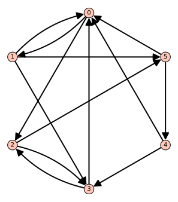
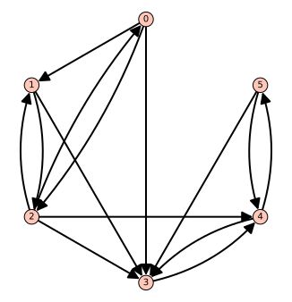
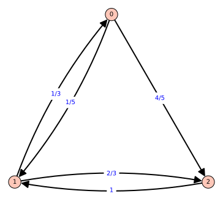

Projet 6.3.1. L’algorithme PageRank.
En 1998, Sergey Brin et Larry Page ont révolutionné le monde de la recherche sur le web en développant un algorithme appelé PageRank, qui mena à la création de la compagnie Google. Le fonctionnement est simple, l’algorithme retourne la probabilité qu’un utilisateur qui se promène au hasard sur le web clique sur une certaine page.
On considère un modèle simplifié d’internet. La figure 6.3.1 illustre un graphe dont les sommets peuvent être vus comme étant des pages web et les arêtes comme des liens d’une page vers un autre. Ce web simplifié contient donc trois pages, nommées respectivement \(0,1\) et \(2\text{.}\) À partir de la page \(0\text{,}\) on peut aller vers la page \(1\) ou la page \(2\text{,}\) à partir de la page \(1\text{,}\) on peut aller vers la page \(0\) ou la page \(2\text{,}\) mais à partir de la page \(2\text{,}\) on ne peut qu’aller vers la page \(1\text{.}\)

Pour chaque page, on associe la valeur de la page en considérant la proportion de liens pointant vers cette page en provenance de chaque sommet. Par exemple, pour la page \(0\text{,}\) la valeur associée est
\begin{equation*}
x_0=\frac{1}{2}x_1
\end{equation*}
puisque le seul lien pointant vers \(0\) provient de \(1\) et que cette dernière possède deux liens sortants. La valeur de \(x_1\) est
\begin{equation*}
x_1=\frac{1}{2}x_0+x_2
\end{equation*}
et celle de \(x_2\) est
\begin{equation*}
x_2=\frac{1}{2}x_0+\frac{1}{2}x_1\text{.}
\end{equation*}
Le vecteur PageRank est le vecteur \(\vec{v}=(x_0,x_1,x_2)\text{.}\)
(a)
On regarde maintenant comment les valeurs sont calculées. On reconnait à partir des trois équations pour \(x_0,x_1,x_2\) qu’on peut former un système d’équations linéaires.
(i)
Trouver une matrice \(G\) telle que \(G\vec{v}=\vec{v}\text{.}\) On appelle cette matrice la matrice Google.
(ii)
Par construction, cette matrice a pour valeur propre \(\lambda=1\text{.}\) La direction invariante associée à cette valeur propre est importante. C’est le vecteur des valeurs recherchées. Puisqu’on veut que ce vecteur soit une proportion, on ajoute la condition additionnelle que \(x_0+x_1+x_2=1\text{.}\) Trouver le vecteur des valeurs pour le web hypothétique décrit par la figure 6.3.1.
(iii)
Quelle page parmi les trois a la plus grande valeur? C’est cette page qui sortirait en premier lors d’une recherche Google sur ce petit web.
(b)
Trouver la page ayant la plus grande valeur dans le web hypothétique décrit par la figure 6.3.2.

(c)
Dans la réalité, il serait très couteux de calculer le vecteur propre de la matrice de Google, puisque le véritable web contient près de deux-milliards de sites web 1 , qui contiennent chacun plusieurs pages. Échelonner une telle matrice est impensable.
(i)
On s’intéresse à la position d’un utilisateur après \(n\) clics qui cliquerait sur les liens de manières aléatoires. Par exemple, dans le web hypothétique de la figure 6.3.1, avec la page de départ \(0\text{,}\) si l’on pose \(\vec{v}_0=(1,0,0)\text{,}\) alors les chances de se retrouver sur les pages \(0,1,2\) après un clic sont données par les entrées du vecteur
\begin{equation*}
\vec{x}_1=A\vec{x}_0\text{.}
\end{equation*}
En général, les chances après \(n\) clics sont données par
\begin{align*}
A\vec{x}_n&=A\vec{x}_{n-1}\\
&=A(A\vec{x}_{n-2})\\
&=A^2\vec{x}_{n-2}\\
&=\vdots\\
&=A^n\vec{x}_0\text{.}
\end{align*}
Calculer les probabilités de se retrouver sur les pages \(0,1,2\) après \(n=5,10,20\) clics.
(ii)
Calculer les probabilités de se retrouver sur les pages \(0,1,2,3,4,5\) après \(n=5,10,20\) clics pour le web hypothétique de la figure 6.3.2.
(iii)
Calculer \(G^{20}\) pour les deux matrices de Google des webs hypothétiques. Que peut-on remarquer?
En général, Google va calculer une grande puissance de sa matrice \(G\) pour retourner les pages avec le plus de valeurs, car cela est moins couteux que de trouver le vecteur propre. On peut montrer que sous certaines conditions sur \(G\text{,}\) les colonnes de \(G^n\) convergent toujours vers le vecteur propre recherché lorsque \(n\) tend vers l’infini.
(d)
Considérer maintenant le web hypothétique illustré par la figure 6.3.3. Quelle prédiction peut être faite pour les pages \(0,1\) et \(2\text{?}\)

(e)
Vérifier l’hypothèse en calculant le vecteur propre de la matrice de Google et en le normalisant pour que les entrées somment à \(1\text{.}\)
(f)
Calculer \(G^{20}\) et vérifier à nouveau ce qui a été observé à la partie 6.3.1.c.iii.
(g)
Une matrice comme celle du web hypothétique de la figure 6.3.3 est problématique car, à partir d’une certaine puissance, des entrées de la matrice \(G^n\) sont toujours nulles et il est impossible de retourner à ces pages. En regardant plus attentivement le graphe, on constate que lorsqu’on entre dans l’une des pages \(3,4,5\text{,}\) il est impossible d’en ressortir.
Google contourne ce problème en modifiant légèrement sa matrice \(G\text{.}\) En fait, il utilise une matrice \(G^{'}\) définie à partir de la matrice \(G\) et d’une matrice \(H\) qui, pour un web à \(n\) pages serait égale à
\begin{equation*}
H=\begin{pmatrix}
\frac{1}{n}&\frac{1}{n}&\cdots & \frac{1}{n}\\
\frac{1}{n}&\frac{1}{n}&\cdots & \frac{1}{n}\\
\vdots&\vdots&\ddots & \vdots\\
\frac{1}{n}&\frac{1}{n}&\cdots & \frac{1}{n}
\end{pmatrix}\text{.}
\end{equation*}
Dans cette matrice, toutes les pages ont la même chance d’être visitées, à partir de n’importe quelle autre page, incluant la page sur laquelle on se trouve déjà.
L’équation pour la matrice \(G^{'}\) est
\begin{equation*}
G^{'}=pG+(1-p)H
\end{equation*}
où \(p\in [0,1]\text{.}\) La valeur de \(p\) utilisée par Google n’est pas connue. Pour la suite, on utilisera \(p=0.85\text{.}\)
(i)
En prenant à nouveau la situation de la figure 6.3.1, déterminer le vecteur propre de la matrice \(G^{'}\text{.}\) Est-il différent de celui de la matrice \(G\text{?}\)
(ii)
Répéter avec le web hypothétique de la figure 6.3.2, déterminer le vecteur propre de la matrice \(G^{'}\text{.}\) Est-il différent de celui de la matrice \(G\text{?}\)
(iii)
Répéter avec le web hypothétique de la figure 6.3.3, déterminer le vecteur propre de la matrice \(G^{'}\text{.}\) Est-il différent de celui de la matrice \(G\text{?}\)
(h)
On peut généraliser le concept où, à partir de certaines pages, il est plus probable d’aller vers une page qu’une autre. Graphiquement, ceci est représenté en donnant un poids aux arêtes reliant les sommets du graphe. On s’assure que la somme des poids sortant d’un sommet donne \(1\text{.}\) En quelque sorte, le poids pourrait représenter la proportion des liens sortant du sommet \(a\) et allant vers le sommet \(b\text{.}\)
(i)
Analyser le graphe de la figure 6.3.4, représentant une modification du web hypothétique de la figure 6.3.1.

(ii)
Répéter avec la modifification du web hypothétique de la figure 6.3.2, illustrée à la figure suivante.
![Un graphe à six sommets est illustré. Les sommets sont reliés par des flèches. Le sommet zéro pointe vers le sommet un avec poids un sur trois et vers le sommet deux avec poids deux sur trois. Le sommet un pointe vers le sommet zéro avec poids un sur quatre, vers le sommet trois avec poids un sur deux et vers le sommet cinq avec poids un sur quatre. Le sommet deux pointe vers le sommet trois avec poids trois sur quatre et vers le sommet cinq avec poids 1/4. Le sommet trois pointe vers le sommet zéro avec poids trois sur cinq et vers le sommet deux avec poids deux sur cinq. Le sommet quatre pointe vers le sommet zéro avec poids un sur trois et vers le sommet trois avec poids deux sur trois. Le sommet cinq pointe vers le sommet zéro et quatre, chacun avec poids un sur deux.](generated/sageplot/img-PageRank5.svg)
(iii)
Répéter avec la modification du web hypothétique de la figure 6.3.3, illustrée à la figure suivante.
![Un graphe à six sommets est illustré. Les sommets sont reliés par des flèches. Le sommet zéro pointe vers le sommet un avec poids une demi, vers le sommet deux avec poids un tiers et vers le sommet trois avec poids un sur six. Le sommet un pointe vers le sommet deux avec poids trois sur sept et vers le sommet trois avec poirds quatre sur sept. Le sommet deux pointe vers le sommet zéro avec poids deux sur cinq, vers le sommet un avec poids un sur quatre, vers le sommet trois avec poids un sur trois et vers le sommet quatre avec poids un sur soixante. Le sommet trois pointe vers le sommet quatre avec poids 1, le sommet quatre pointe vers le sommet trois avec poids un sur six et vers le sommet cinq avec poids cinq sur six. Finalement, le sommet cinq pointe vers le sommet trois avec poids sept sur neuf et vers le sommet quatre avec poids deux sur neuf.](generated/sageplot/img-PageRank6.svg)